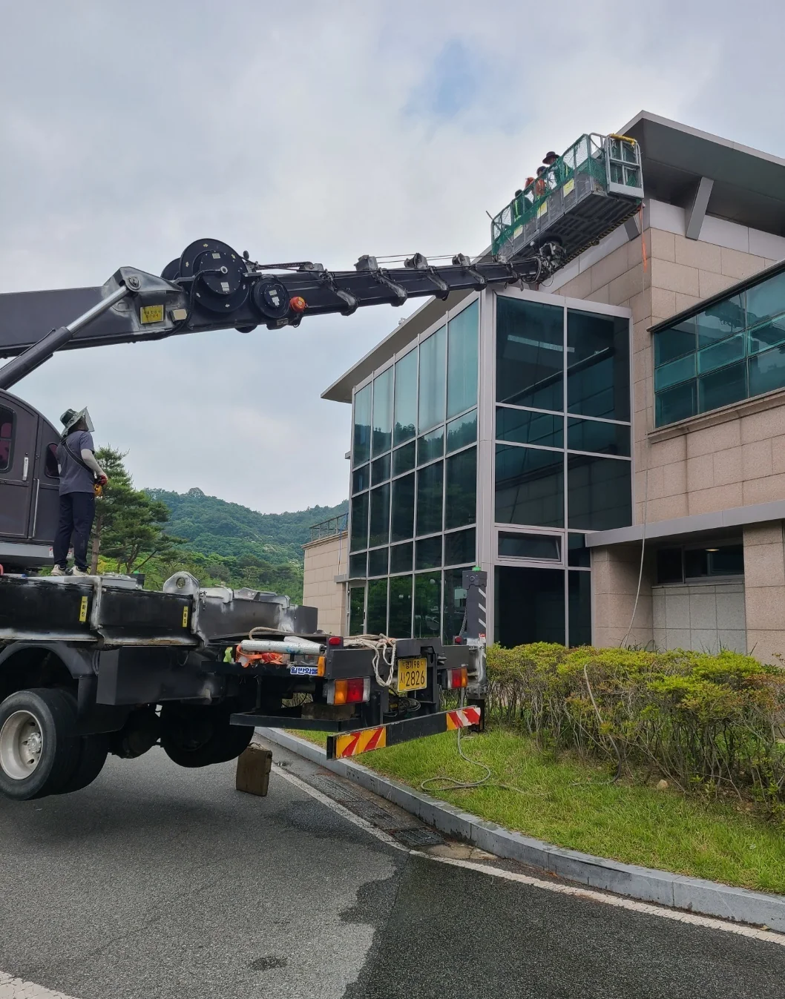

종합청소회사 이푸른티에스
청소는 정성입니다.정성은 결과로 나타납니다.
사무실·관공서·학교 정기청소부터 공장 대청소, 유리·외벽,
에어컨, 방역소독까지 건물 관리를 맡고 있습니다.
배경 사진은 모두 실제 작업 현장입니다
- 설립2015년 창업
- 기업 구분여성기업
- 업종건물위생관리업
- 보험배상책임보험 가입
Services하는 일을 한눈에 보실 수 있게
하는 일을 한눈에 보실 수 있게
여섯 분야로 정리했습니다.
사진은 실제 작업 현장입니다. 카드에 마우스를 올리면 다른 현장 사진과 세부 항목 전체가 보입니다.


사업장클리닝/정기청소
- 카페트청소
- 바닥왁스청소
- 골프장카트청소
- 사무실정기청소
- 관공서정기청소
- 학교정기청소
- 화장실정기청소
- 인력파견근무
- 계단청소
- 분리수거
외 6개 항목
자세히 보기대청소 및 특수청소
- 쓰레기집청소
- 공장/물류창고청소
- 체육관/기숙사청소
- 전력구청소
- 준공청소
- 전산실청소
- 구조물/조형물청소
외 3개 항목


에어컨클리닝
- 가정용 에어컨청소
- 기업용 에어컨청소
- 학교 및 관공서 에어컨청소
- 필터청소
- 실외기청소
- 냉매가스 점검 및 충전
외 2개 항목


건물관리/배수로관리
- 외벽방수
- 외벽보수
- 외벽청소
- 고소유리청소
- 실리콘/시트지 제거
- 배수로청소
- 낙엽망 설치
외 3개 항목

방역소독/외부환경관리
- 학교·사무실·공장·빌딩·식당 정기소독
- 실내소독
- 소독필증 발급
- 해충방제
- 모기퇴치
외 1개 항목
연출 이미지
물품납품
- 롤화장지
- 핸드타올
- 곽티슈
- 물비누
- 세수비누
- 각종 비닐
- 배수구 트랩
- 소변기 탈취제
외 4개 항목
Before & After작업 전과 후,
작업 전과 후,
있는 그대로 보여 드립니다.


골프장카트 청소
시트와 차체, 바닥 매트까지 손이 닿는 곳을 꼼꼼하게 청소합니다. 골프장 운영 일정에 맞춰 작업합니다.
전후 사진은 촬영 방향이 달라 겹치지 않고 나란히 보여 드립니다.


쓰레기집 청소
쌓인 물건과 쓰레기를 분류해 반출하고, 비워진 공간을 바닥부터 다시 청소합니다. 상황이 집마다 달라 현장을 보고 견적을 드립니다.
같은 집의 다른 공간을 찍은 사진입니다. 각도가 달라 나란히 보여 드립니다.
Principles현장마다 지키는
현장마다 지키는
관리 원칙 세 가지
청소는 또 다른 인테리어입니다. 같은 공간도 꾸준히 관리하면 달라 보입니다. 그래서 정해 둔 원칙을 매번 같은 방식으로 지킵니다.

- 01
걸레를 구분해 씁니다
사무실용과 화장실용 걸레를 구분하여 위생적으로 사용합니다.
- 02
주차별로 다르게 관리합니다
월 4주를 기준으로 주차별 청소 방식을 달리하여 체계적으로 관리합니다.
- 03
매뉴얼대로 일정하게 합니다
체계화된 청소 매뉴얼을 바탕으로 일관되고 균일한 청소 품질을 제공합니다.
Field Photos
현장 사진
꾸미지 않은 실제 작업 사진입니다. 분야를 고르면 해당 현장만 모아 볼 수 있고, 사진을 누르면 크게 보입니다.
사진 28장
분위기 연출 영상
Sanitation
정기소독을 하고
정기소독을 하고
소독필증을 발급해 드립니다.
학교, 사무실, 공장, 빌딩, 식당을 정기적으로 소독합니다. 소독을 마친 뒤에는 소독필증을 발급해 드립니다.
- 학교·사무실·공장·빌딩·식당 정기소독
- 실내소독, 해충방제, 모기퇴치
- 소독필증 발급